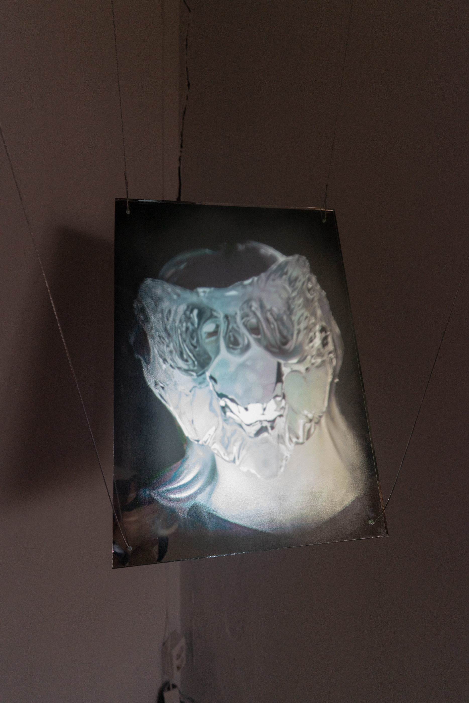
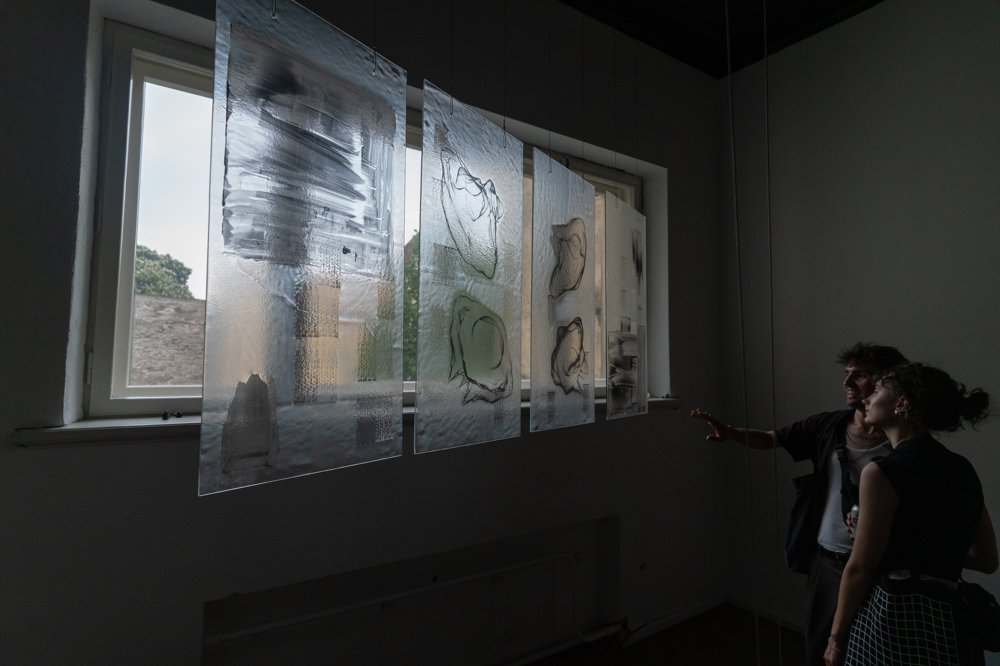
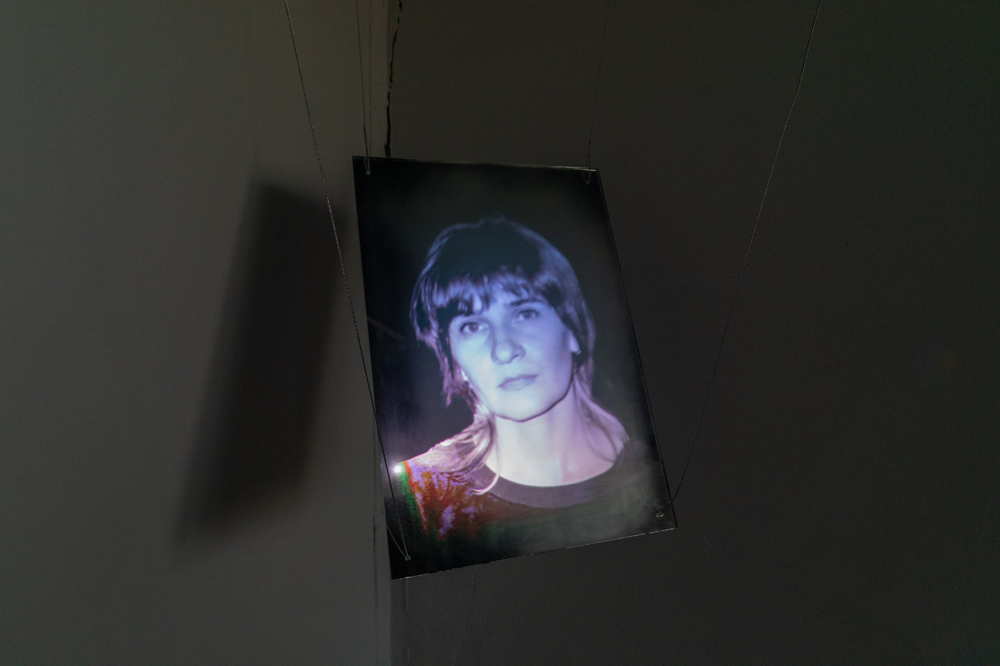
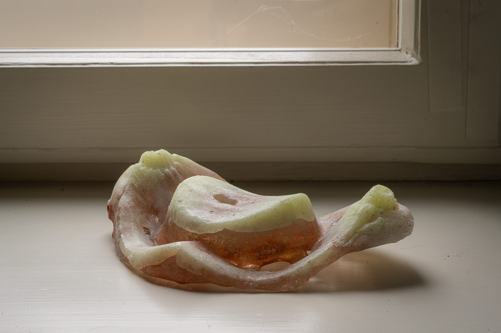
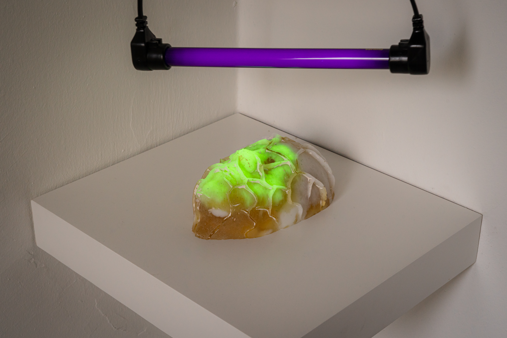
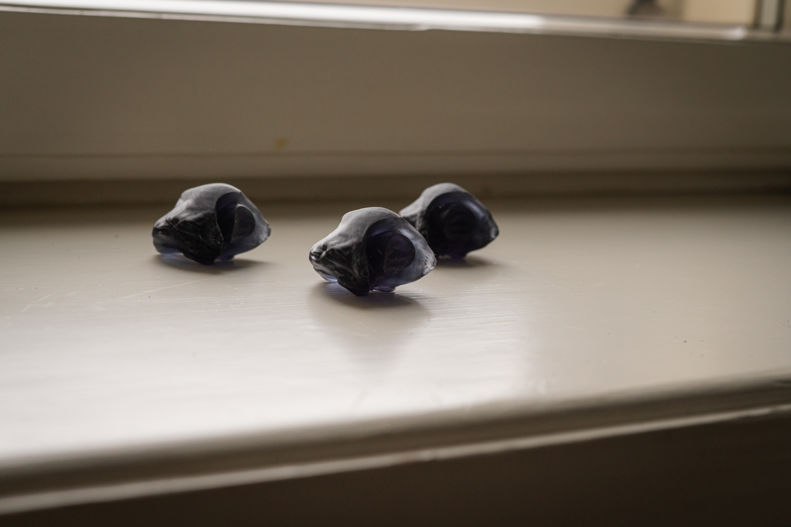
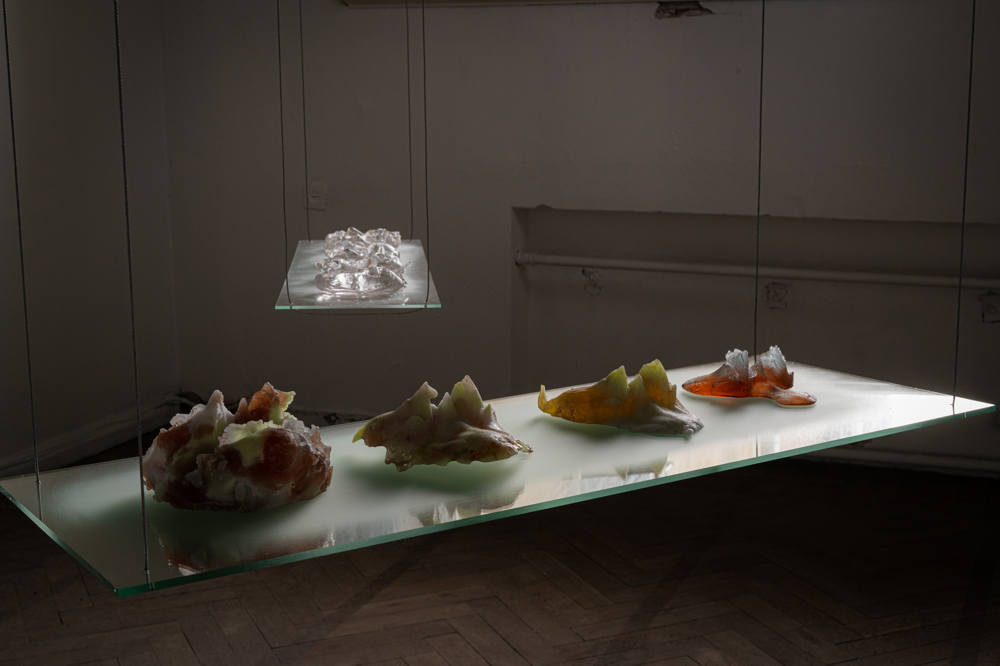
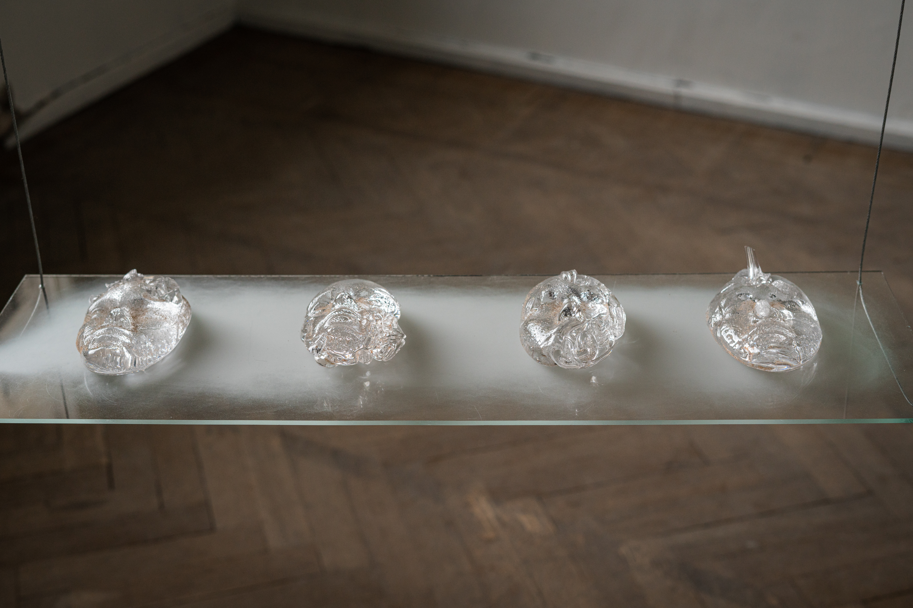
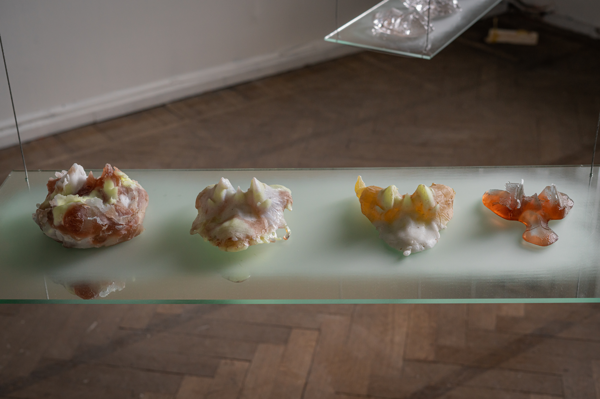
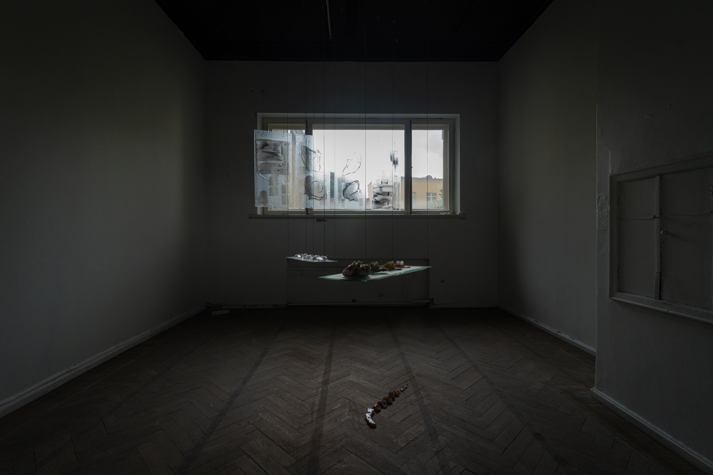

Networked Myths: Weaving Identity from the Threads of the Digital Age
Tallinn Art Hall, TASE ‘24 Graduation Festival of the Estonian Academy of Arts
Networked Myths: Weaving Identity from the Threads of the Digital Age explores the formation of identity and its preservation at the intersection of technology. The work considers identity as a constantly evolving structure shaped by cultural and technological influences, where digital and biological threads interlace to connect past and future.
The interdisciplinary approach combines information technology, genomics, and cultural theory to offer new perspectives on identity. Information technology is used to analyze how digital traces and data protection shape self-perception, while genomics highlights the potential of DNA storage and the impact of genetic identity. Cultural theory adds a narrative layer, examining the role of myths and storytelling in shaping identity.
At the heart of the work lies a juxtaposition of biotechnology and digital technology, visualized through a multilayered installation. The central metaphor—the moth pupae—represents the ephemerality of biological existence contrasted with the perceived permanence of technology. The project’s narrative revolves around a crystallized silkworm cocoon discovered in the future, whose DNA analysis reveals an unethical data storagemethod.
Technical and Artistic Elements:
• Glass Panels: Four panels visualizing the translation of binary code into DNA nucleotides (ACTG) and back, intertwining data and biological memory.
• Glass Faces: Created through sand casting and glass slumping techniques, these fragments represent reconstructions of contemporary civilization as viewed from the future.
• Patte de Verre Silkworm Cocoons: Four renderings of cocoons with fragmented skeletal structures, symbolizing the merging of biological and technological identity.
• Distorted Face Rendering: A uranium glass sculpture illuminated by UV light, highlighting the tension between data loss and preservation.
• Metamorphic Animation: A machine-learning-generated evolving portrait, projected onto a partially frosted mirror, inviting viewers to engage with the fluid nature of digital self-representation.
Networked Myths delves into the complexities of identity across time and space, questioning the role of digital and biological storage in shaping selfhood and memory. Does technology truly preserve identity, or does it merely create the illusion of permanence? The work engages in a poetic and scientific dialogue, drawing the viewer into the intricate networks of identity formation.














Photo: Evert Palmets